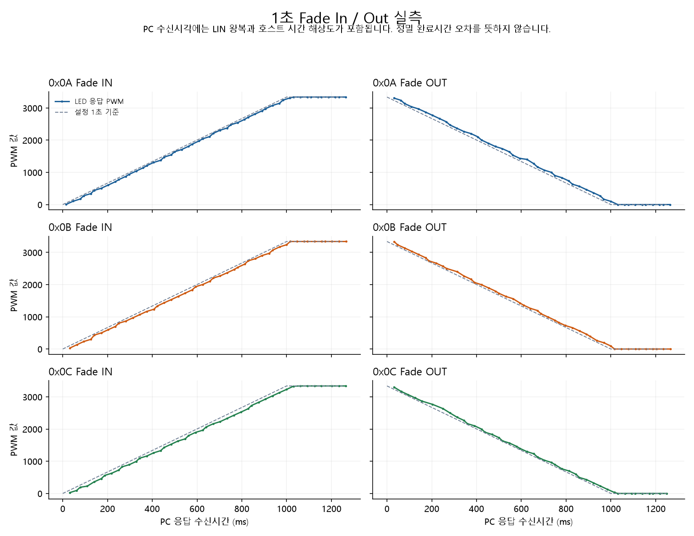
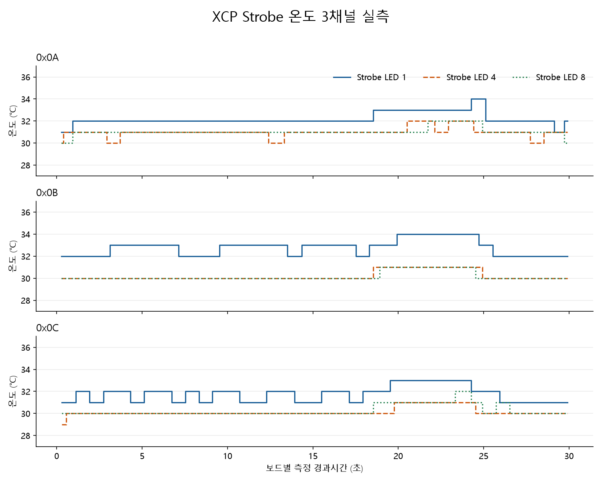

2026-11-11 · 10:18:26~10:39:06 · 0A/0B/0C · 프로젝트 코드 변경 없음
지정 BIN 최초 업데이트 3회 → 기능 검사 → 동일 BIN 최종 업데이트 3회 완료.
Strobe 8개 LED를 검사했습니다. LH/RH/Head/Back/Logo의 연결 오류(bit4)는 미장착 조건으로 판정에서 제외했습니다.
| 보드 | 시리얼 | 플리커 이론값 대비 최대 편차 | Fade PWM 차이 | 자동검사 요약/상세 | XCP 3채널 세트 | 업데이트 |
|---|---|---|---|---|---|---|
| 0A | 26K10-0001 | 1.333ms | 0 | 19/148 | 150 | 2회 통과 |
| 0B | 26K10-0002 | 1.0ms | 0 | 19/148 | 150 | 2회 통과 |
| 0C | 26K10-0003 | 1.667ms | 0 | 19/148 | 150 | 2회 통과 |
5/10/15/20/25/30Hz × 듀티 10/50/90%, 조건당 1초 측정 3회. 추가로 보드별 30Hz·50%를 1초씩 30회 측정했습니다. 일반 진단과 미장착 Logo 재확인 동작을 유지했습니다.
| 보드 | Hz | Duty % | 주기 ms | ON ms | OFF ms | 추가 편차 ms |
|---|---|---|---|---|---|---|
| 0A | 5 | 10 | 200~200 | 20~20 | 180~180 | 0 |
| 0A | 5 | 50 | 200~200 | 100~100 | 100~100 | 0 |
| 0A | 5 | 90 | 200~200 | 180~180 | 20~20 | 0 |
| 0A | 10 | 10 | 100~100 | 10~10 | 90~90 | 0 |
| 0A | 10 | 50 | 100~100 | 50~50 | 50~50 | 0 |
| 0A | 10 | 90 | 100~100 | 90~90 | 10~10 | 0 |
| 0A | 15 | 10 | 66~67 | 7~7 | 59~60 | 0 |
| 0A | 15 | 50 | 66~67 | 33~33 | 33~34 | 0 |
| 0A | 15 | 90 | 66~67 | 60~60 | 6~7 | 0 |
| 0A | 20 | 10 | 50~50 | 5~5 | 45~45 | 0 |
| 0A | 20 | 50 | 50~50 | 25~25 | 25~25 | 0 |
| 0A | 20 | 90 | 50~50 | 45~45 | 5~5 | 0 |
| 0A | 25 | 10 | 40~40 | 4~5 | 35~36 | 1 |
| 0A | 25 | 50 | 40~40 | 20~20 | 20~20 | 0 |
| 0A | 25 | 90 | 40~40 | 36~36 | 4~4 | 0 |
| 0A | 30 | 10 | 33~34 | 3~3 | 30~31 | 0 |
| 0A | 30 | 50 | 33~34 | 17~17 | 16~17 | 0 |
| 0A | 30 | 90 | 33~34 | 30~30 | 3~4 | 0 |
| 0B | 5 | 10 | 200~200 | 20~20 | 180~180 | 0 |
| 0B | 5 | 50 | 200~200 | 100~100 | 100~100 | 0 |
| 0B | 5 | 90 | 200~200 | 180~180 | 20~20 | 0 |
| 0B | 10 | 10 | 100~100 | 10~10 | 90~90 | 0 |
| 0B | 10 | 50 | 100~100 | 50~50 | 50~50 | 0 |
| 0B | 10 | 90 | 100~100 | 90~90 | 10~10 | 0 |
| 0B | 15 | 10 | 66~67 | 7~7 | 59~60 | 0 |
| 0B | 15 | 50 | 66~67 | 33~33 | 33~34 | 0 |
| 0B | 15 | 90 | 66~67 | 60~60 | 6~7 | 0 |
| 0B | 20 | 10 | 50~50 | 5~5 | 45~45 | 0 |
| 0B | 20 | 50 | 50~50 | 25~25 | 25~25 | 0 |
| 0B | 20 | 90 | 50~50 | 45~45 | 5~5 | 0 |
| 0B | 25 | 10 | 40~40 | 4~4 | 36~36 | 0 |
| 0B | 25 | 50 | 40~40 | 20~20 | 20~20 | 0 |
| 0B | 25 | 90 | 40~40 | 36~36 | 4~4 | 0 |
| 0B | 30 | 10 | 33~34 | 3~3 | 30~31 | 0 |
| 0B | 30 | 50 | 33~34 | 17~17 | 16~17 | 0 |
| 0B | 30 | 90 | 33~34 | 30~30 | 3~4 | 0 |
| 0C | 5 | 10 | 200~200 | 20~20 | 180~180 | 0 |
| 0C | 5 | 50 | 200~200 | 100~100 | 100~100 | 0 |
| 0C | 5 | 90 | 200~200 | 180~180 | 20~20 | 0 |
| 0C | 10 | 10 | 100~100 | 10~10 | 90~90 | 0 |
| 0C | 10 | 50 | 100~100 | 50~50 | 50~50 | 0 |
| 0C | 10 | 90 | 100~100 | 90~90 | 10~10 | 0 |
| 0C | 15 | 10 | 66~67 | 7~7 | 59~60 | 0 |
| 0C | 15 | 50 | 66~67 | 33~33 | 33~34 | 0 |
| 0C | 15 | 90 | 66~67 | 60~60 | 6~7 | 0 |
| 0C | 20 | 10 | 50~50 | 5~5 | 45~45 | 0 |
| 0C | 20 | 50 | 50~50 | 25~25 | 25~25 | 0 |
| 0C | 20 | 90 | 50~50 | 45~45 | 5~5 | 0 |
| 0C | 25 | 10 | 40~40 | 4~4 | 36~36 | 0 |
| 0C | 25 | 50 | 40~40 | 20~20 | 20~20 | 0 |
| 0C | 25 | 90 | 40~40 | 36~36 | 4~4 | 0 |
| 0C | 30 | 10 | 33~34 | 3~3 | 30~31 | 0 |
| 0C | 30 | 50 | 33~34 | 17~17 | 16~17 | 0 |
| 0C | 30 | 90 | 33~34 | 30~30 | 3~4 | 0 |
0.5초·1초·3초의 Fade In/Out을 각각 검사했습니다. 밝기 변화 방향, 최종 8개 LED PWM, 중간 10점의 송신/수신값을 확인했습니다. 아래 완료시간은 LIN 요청·응답 사이의 범위이며, 이 폭을 LED 자체 오차로 해석하면 안 됩니다. Fade 완료시간 ±2ms 여부는 이 측정으로 판정할 수 없습니다.
| 보드 | 설정 ms | 방향 | 완료시간 하한 ms | 완료시간 상한 ms |
|---|---|---|---|---|
| 0A | 500 | in | 493.0 | 549.999 |
| 0A | 500 | out | 483.997 | 540.996 |
| 0A | 1000 | in | 991.66 | 1047.659 |
| 0A | 1000 | out | 972.031 | 1038.03 |
| 0A | 3000 | in | 2992.296 | 3048.295 |
| 0A | 3000 | out | 2993.096 | 3054.095 |
| 0B | 500 | in | 482.174 | 549.173 |
| 0B | 500 | out | 493.0 | 551.999 |
| 0B | 1000 | in | 971.984 | 1028.983 |
| 0B | 1000 | out | 971.899 | 1030.898 |
| 0B | 3000 | in | 2982.172 | 3050.171 |
| 0B | 3000 | out | 2997.995 | 3059.994 |
| 0C | 500 | in | 490.0 | 549.999 |
| 0C | 500 | out | 477.0 | 535.999 |
| 0C | 1000 | in | 999.779 | 1062.778 |
| 0C | 1000 | out | 986.833 | 1048.832 |
| 0C | 3000 | in | 2991.127 | 3053.126 |
| 0C | 3000 | out | 2988.081 | 3050.08 |
완료시간 범위는 PLIN 하드웨어 타임스탬프와 프레임 여유를 사용했습니다. MCU 중간값 읽기는 100ms 간격이며, 10ms Fade 계산 단계와 구분됩니다.

RGBW 10/50/100%, Strobe ON/OFF, 보드별 색상 분리, ID 0D 임시 변경 후 복원, UDS 전체 Node Scan, 제품정보 쓰기·읽기·원복을 통과했습니다. XCP는 Strobe LED 1/4/8 온도와 PWM 값을 확인했습니다. XCP 쓰기는 해당 펌웨어에서 지원하지 않습니다.
기존 PC 자동검사 로직을 임시 콘솔 실행기에 연결해 Strobe만 검사했습니다. 자동검사 중에는 기존 로직대로 주기 진단이 중지됩니다. 위 일반 동작 시험은 주기 진단을 유지한 별도 측정입니다.

CJ_App_mass_OnlyStrobe_20261111.bin · 29,688바이트 · CRC32 1567E1F4
| 단계 | 보드 | 전송 블록 | 전송 바이트 | BIN 일치 | 보드 CRC 응답 |
|---|---|---|---|---|---|
| initial | 0A | 232 | 29688 | 일치 | 정상 |
| initial | 0B | 232 | 29688 | 일치 | 정상 |
| initial | 0C | 232 | 29688 | 일치 | 정상 |
| final | 0A | 232 | 29688 | 일치 | 정상 |
| final | 0B | 232 | 29688 | 일치 | 정상 |
| final | 0C | 232 | 29688 | 일치 | 정상 |
총 6회 전송 데이터를 로그에서 재조립하여 지정 BIN과 바이트 단위로 일치함을 확인했습니다. 최종 APP 복귀, Strobe 진단 및 8개 LED ON/OFF readback 정상. 마지막 출력은 OFF입니다. 프로젝트 소스·설정 766개 파일의 해시가 시험 전후 동일합니다.
시험 기록: 0C 측정 중 결과 JSON 저장 접근 오류로 도구가 한 번 중단되었습니다. 보드 기능 오류는 없었으며, 기존 기록을 보존하고 남은 항목을 별도 로그로 완료했습니다.
원시 LIN 로그와 JSON 결과: 프로젝트 validation 폴더의 StrobeOnly_20261111_1014 이름으로 저장.